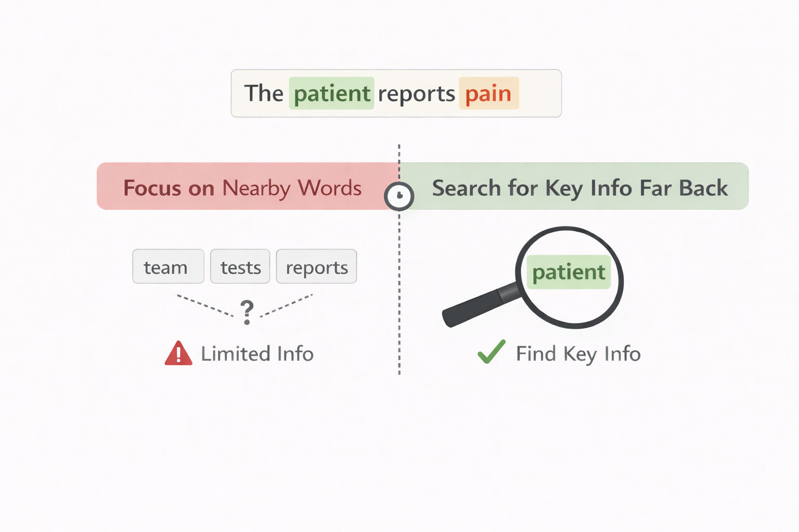
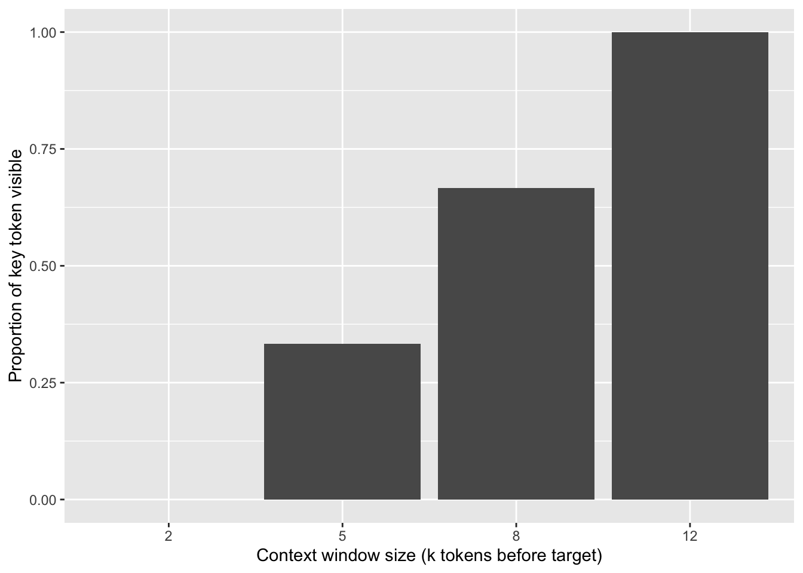
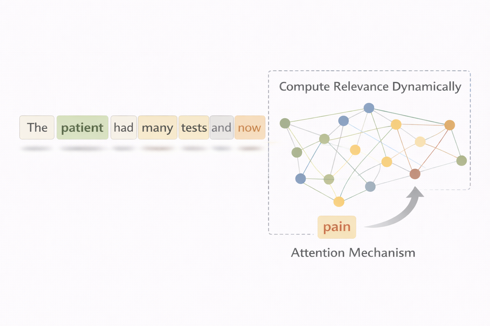
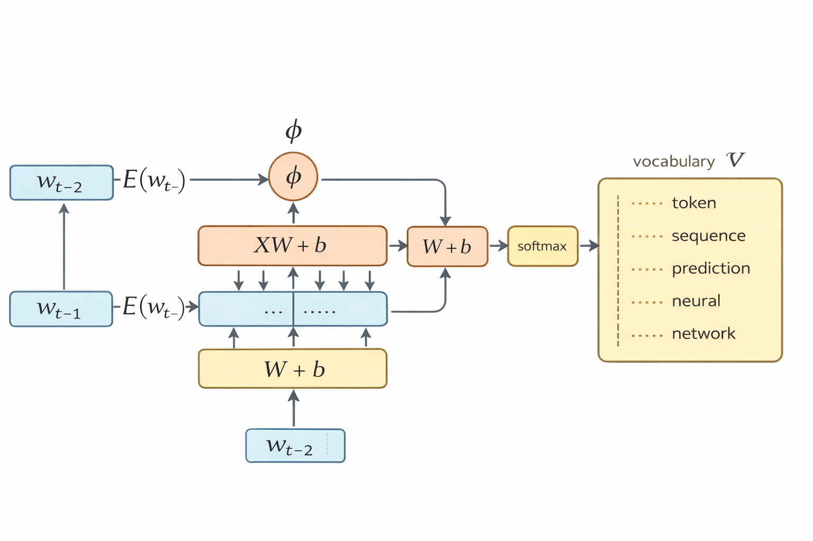
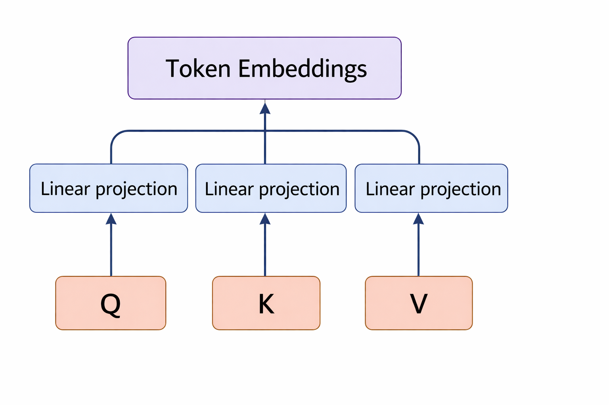
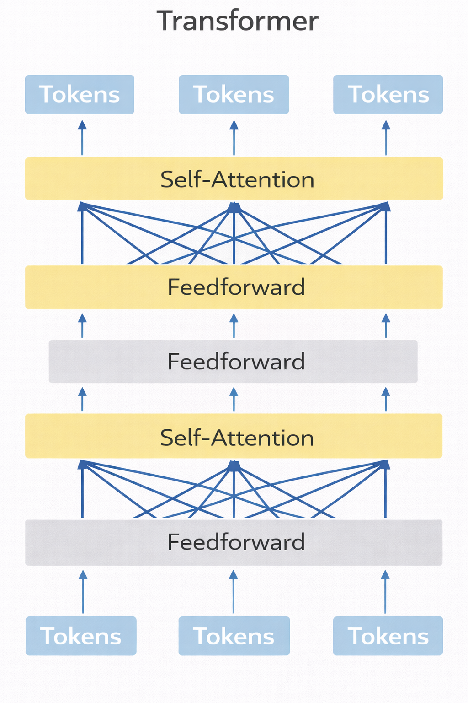
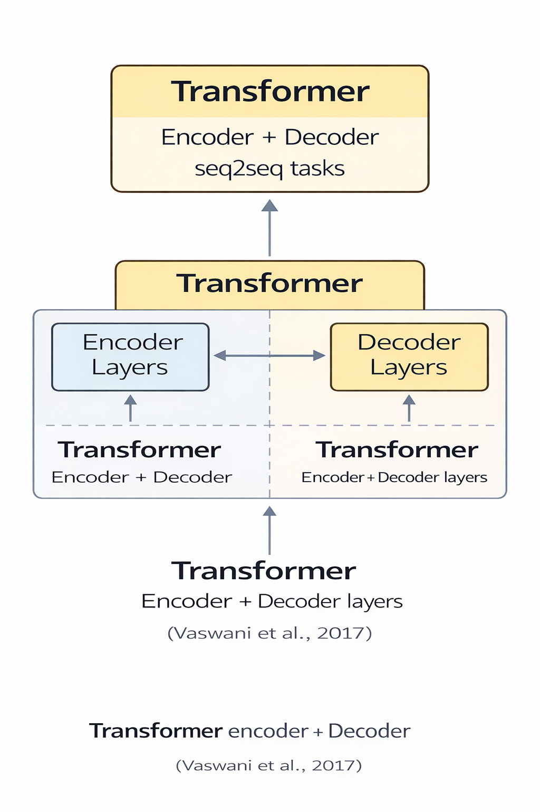
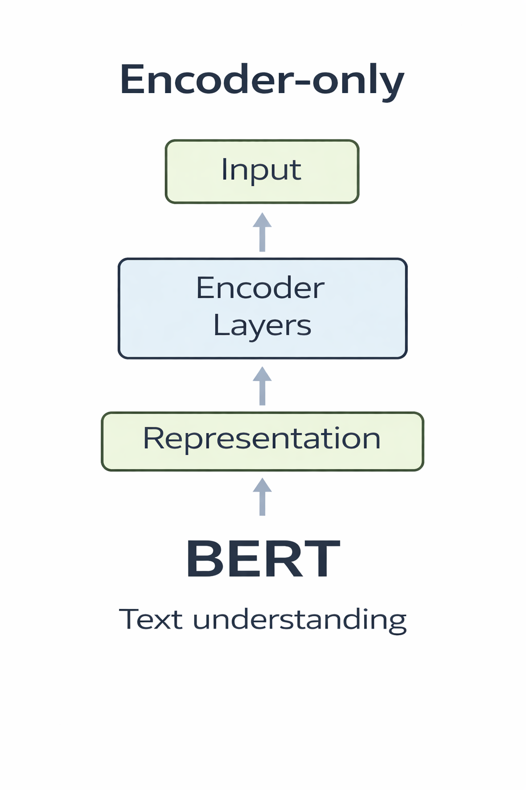
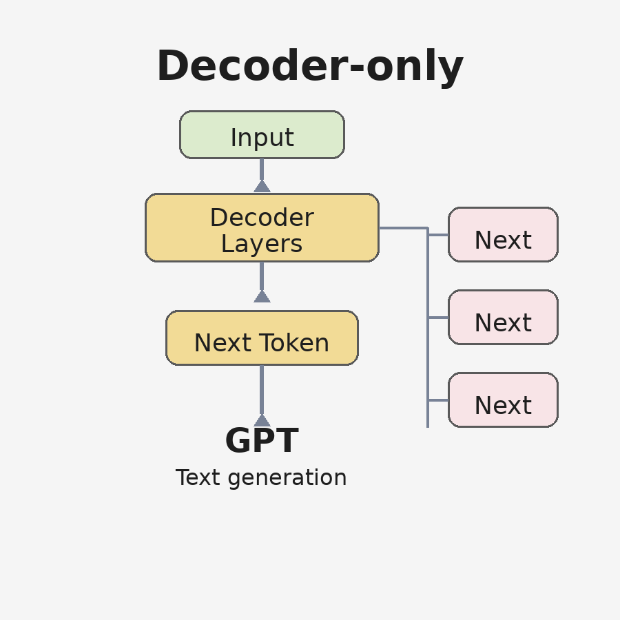

req_pkgs <- c("dplyr", "tibble", "stringr", "purrr", "tidyr", "ggplot2")
to_install <- setdiff(req_pkgs, rownames(installed.packages()))
if (length(to_install) > 0) {
install.packages(to_install, repos = "https://cloud.r-project.org")
}
invisible(lapply(req_pkgs, library, character.only = TRUE))11 GenAI Foundations II: From Probabilistic Models to Transformers
11.1 Introduction
In the previous chapter, we defined the core probabilistic objective of language modeling: assigning a probability to a sequence of tokens. Before discussing architectures, we briefly restate that objective to make clear what remains fixed throughout this chapter.
A sentence is modeled as a sequence of random variables \((W_1, \ldots, W_n)\) taking values in a vocabulary \(\mathcal{V}\). The probability of observing a full sequence \((w_1, \ldots, w_n)\) can be expressed using the chain rule of probability:
\[ P\left(w_1, \ldots, w_n\right) = \prod_{t=1}^n P\left(w_t \mid w_{<t}\right). \]
Technical note (independence clarification).
The chain rule factorization above does not assume that tokens are independent and identically distributed (i.i.d.). In fact, it makes dependencies explicit. The decomposition is a mathematical identity that holds for any joint distribution over discrete random variables.
Independence assumptions arise only when we restrict the conditioning context. For example, n-gram models impose a finite-order Markov assumption by approximating
\[ P(w_t \mid w_{<t}) \approx P(w_t \mid w_{t-n+1}, \dots, w_{t-1}), \]
thereby limiting how much past information can influence the next prediction.
This factorization reduces language modeling to repeatedly estimating a next-token conditional distribution. At each position \(t\), the model assigns probabilities to all possible vocabulary items given the previous context \(w_{<t}\).
The probabilistic objective therefore remains unchanged. What changes across model families is how the context \(w_{<t}\) is represented in a way that is expressive, scalable, and computationally feasible.
This chapter is organized around that question.
The goal is to keep the probabilistic foundation fixed, as in the previous chapter, while making the architectural question explicit: how can a model access and prioritize relevant information in \(w_{<t}\) at scale?
We proceed in four stages:
- In the next section, we revisit the probabilistic formulation and show why fixed-window context (as in n-grams) can fail when dependencies are long-range.
- We then introduce attention as a principled retrieval mechanism that dynamically reweights prior tokens instead of compressing them.
- Next, we formalize scaled dot-product attention and build toward the Transformer block architecture.
- Finally, we connect the architecture to its probabilistic training objectives, contrasting autoregressive modeling (GPT-style) and masked modeling (BERT-style).
Throughout, the objective remains the same: estimating \(P(w_t \mid w_{<t})\). What evolves is the mechanism used to represent and access context.
11.2 A roadmap for this chapter
It is useful to keep one central idea in mind from the beginning: the probabilistic objective does not change. What evolves across models is the way context is represented, accessed, and propagated.
In all cases, the model is trying to approximate the same target:
\[ P(w_t \mid w_1, w_2, \ldots, w_{t-1}) \]
What differs is how this conditional dependence is operationalized. Early approaches rely on a fixed and local view of context, as in \(n\)-grams, where only a limited window of previous tokens is visible. Recurrent models extend this by compressing the entire past into a sequential hidden state, introducing a form of memory but also a bottleneck. Attention mechanisms shift this perspective entirely, allowing the model to dynamically retrieve relevant information from all previous tokens. Transformers then scale this idea by stacking multiple attention layers, enabling richer and more flexible representations. Finally, models such as GPT and BERT differ not in their objective, but in how information is allowed to flow through the sequence.
11.2.1 From probability to neural computation
Up to this point, the conditional probability
\[ P(w_t \mid w_{<t}) \]
has been treated as an abstract quantity. Modern language models approximate this distribution using parameterized neural networks.
Instead of storing explicit frequency counts, the model learns a function
\[ P_\theta(w_t \mid w_{<t}) \]
where \(\theta\) represents the parameters of a deep neural architecture.
This shift replaces discrete counting with continuous representation learning. Tokens are mapped into vector spaces, and the conditional probability is computed through a sequence of learned transformations.
The mechanisms introduced in this chapter—attention and Transformers—can therefore be understood as specific computational strategies for approximating this same probabilistic object at scale.
flowchart LR A([Probabilistic objective]) --> B([Fixed-window models]) --> C([Why local context fails]) --> D([Attention as retrieval]) --> E([Transformer block]) --> F([Masking strategies]) --> G([GPT vs BERT])
The central problem can be stated in simple but fundamental terms: how should a model represent context when the information that determines the correct prediction may appear far from the current position? In natural language, the words that matter most for interpreting or predicting a token are not always adjacent to it. Relevant cues may occur several words, clauses, or even sentences earlier. A robust language model must therefore decide not only how much past information to consider, but also how to identify and prioritize the specific elements of that past context that are truly informative for the present prediction.

In natural language, dependencies are routinely non-local. A pronoun may refer to an entity introduced several sentences earlier; a negation can invert meaning across long spans; a definition, constraint, or instruction may govern interpretation many tokens later. Although the probabilistic objective conditions on the entire past \(w_{<t}\), practical models must approximate this dependence in computationally feasible ways.
Earlier models impose structural bottlenecks. N-gram models restrict context to a fixed window, so relevant tokens may fall outside the visible range. Recurrent models can, in principle, condition on all previous tokens, but they must compress the entire history into a fixed-size hidden state, which may become a lossy summary for long sequences.
This motivates the key idea of this chapter. Instead of compressing all past tokens into a single state, the model should be able to selectively retrieve information from earlier positions, assigning relevance weights that depend on the current prediction. Context should not be uniformly summarized; it should be dynamically queried and selectively retrieved.
Consider the sentence:
“The patient had many tests and several long discussions with the medical team and now reports ___.(pain)”
Formally, the model still estimates \(P(w_t \mid w_{<t})\). What changes is not the objective, but how relevance is distributed across prior tokens. Instead of compressing context uniformly, the model dynamically reweights it.
This requirement — retaining access to the full context while dynamically selecting what matters — leads to a new computational principle: attention. The Transformer architecture is the scalable and parallelizable system that builds upon this principle.
The next chunk constructs a minimal example in which the useful contextual signal appears far from the current token to be predicted. Here, the signal refers to the specific piece of information in the sequence that is genuinely informative for determining the next token. The current token is the position in the sequence where the model must assign a probability distribution over the vocabulary—in this case, the final word of the sentence. The synthetic sentences are designed so that a single early token (“patient” or “trial”) fully determines the correct final prediction (“pain” or “events”), while the intervening words are deliberately uninformative filler. The objective is to isolate the structural problem: although the signal exists in the sequence, it is located far from the current prediction step. This setup makes the limitation of fixed-window context explicit before introducing attention as a principled mechanism for selectively retrieving distant but relevant information.
set.seed(123)
# Synthetic sentences:
# The subject introduced early controls the final "label token" near the end.
make_example <- function(subject = c("patient", "trial")) {
subject <- match.arg(subject)
filler_len <- sample(1:10, 1) # <- key change: variable length
filler <- sample(
c("notes", "summary", "background", "details", "context", "discussion"),
size = filler_len,
replace = TRUE
)
end_token <- ifelse(subject == "patient", "pain", "events")
paste(c("the", subject, filler, "predict:", end_token), collapse = " ")
}
toy <- tibble(
id = 1:12,
text = c(replicate(6, make_example("patient")),
replicate(6, make_example("trial")))
)
toy# A tibble: 12 × 2
id text
<int> <chr>
1 1 the patient discussion background summary predict: pain
2 2 the patient discussion background predict: pain
3 3 the patient details discussion discussion notes summary predict: pain
4 4 the patient background background notes details notes predict: pain
5 5 the patient context background summary summary notes discussion backgr…
6 6 the patient background predict: pain
7 7 the trial context details summary context notes notes summary predict:…
8 8 the trial background details context context background discussion not…
9 9 the trial context context predict: events
10 10 the trial details context summary notes notes background notes discuss…
11 11 the trial notes summary details details discussion predict: events
12 12 the trial background discussion discussion notes discussion summary pr…The output table toy displays the constructed sentences. Each row contains a sentence beginning with either “the patient” or “the trial,” followed by a series of generic tokens such as “background,” “discussion,” “notes,” or “summary.” These intermediate tokens are intentionally noisy and carry no predictive information about the final outcome. The only meaningful distinction between the two groups of sentences lies in the second token: sentences beginning with “the patient” are intended to lead to one prediction (e.g., pain), whereas those beginning with “the trial” lead to another (e.g., events). Visually, however, that decisive signal is buried at the start of a long sequence. The table therefore makes the modeling challenge concrete: if a model relies only on the most recent tokens before the current prediction step, it will not “see” the early signal that actually determines the correct next token.
The next chunk tests what a fixed-window model can “see.” For each sentence, it extracts the last k tokens before the final prediction token. This directly shows whether the distinguishing information (e.g., “patient” vs “trial”) is still present in the model’s accessible context when k is small.
tokenize <- function(x) str_split(str_to_lower(x), "\\s+")[[1]]
window_before_last <- function(tokens, k = 2) {
# last token is the target label ("pain"/"events")
# we return the k tokens before it
n <- length(tokens)
start <- max(1, n - 1 - k + 1)
tokens[start:(n - 1)]
}
visibility_tbl <- toy %>%
mutate(
tokens = map(text, tokenize),
target = map_chr(tokens, ~ tail(.x, 1)),
window_k2 = map_chr(tokens, ~ paste(window_before_last(.x, k = 2), collapse = " ")),
window_k5 = map_chr(tokens, ~ paste(window_before_last(.x, k = 5), collapse = " "))
) %>%
select(id, text, target, window_k2, window_k5)
visibility_tbl %>% as.data.frame() id
1 1
2 2
3 3
4 4
5 5
6 6
7 7
8 8
9 9
10 10
11 11
12 12
text
1 the patient discussion background summary predict: pain
2 the patient discussion background predict: pain
3 the patient details discussion discussion notes summary predict: pain
4 the patient background background notes details notes predict: pain
5 the patient context background summary summary notes discussion background details discussion predict: pain
6 the patient background predict: pain
7 the trial context details summary context notes notes summary predict: events
8 the trial background details context context background discussion notes predict: events
9 the trial context context predict: events
10 the trial details context summary notes notes background notes discussion predict: events
11 the trial notes summary details details discussion predict: events
12 the trial background discussion discussion notes discussion summary predict: events
target window_k2 window_k5
1 pain summary predict: patient discussion background summary predict:
2 pain background predict: the patient discussion background predict:
3 pain summary predict: discussion discussion notes summary predict:
4 pain notes predict: background notes details notes predict:
5 pain discussion predict: discussion background details discussion predict:
6 pain background predict: the patient background predict:
7 events summary predict: context notes notes summary predict:
8 events notes predict: context background discussion notes predict:
9 events context predict: the trial context context predict:
10 events discussion predict: notes background notes discussion predict:
11 events discussion predict: summary details details discussion predict:
12 events summary predict: discussion notes discussion summary predict:The table shows that the decisive signal (“patient” vs “trial”) lies outside the visible window when \(k\) is small. The model therefore fails not because the signal is absent, but because it is inaccessible under a fixed local conditioning rule.
The next chunk quantifies the failure mode. It checks whether the early “key token” (patient/trial) appears inside the last-k window. As k shrinks, the key token often disappears, meaning a fixed-window model cannot condition on it. This sets up the need for a mechanism that can retrieve distant context without expanding n, the number of conditioning tokens, exponentially.
contains_key <- function(tokens, key, k) {
w <- window_before_last(tokens, k = k)
any(w == key)
}
k_values <- c(2, 5, 8, 12)
quant_tbl_long <- toy %>%
mutate(
tokens = map(text, tokenize),
subject = map_chr(tokens, ~ .x[2]) # "patient" or "trial"
) %>%
tidyr::crossing(k = k_values) %>%
mutate(
key_visible = purrr::pmap_lgl(
list(tokens, subject, k),
~ contains_key(..1, ..2, k = ..3)
)
) %>%
group_by(k) %>%
summarise(prop_key_visible = mean(key_visible), .groups = "drop")
quant_tbl_long# A tibble: 4 × 2
k prop_key_visible
<dbl> <dbl>
1 2 0
2 5 0.333
3 8 0.667
4 12 1 To make this visually explicit, we can display the visibility proportion:
ggplot(quant_tbl_long, aes(x = factor(k), y = prop_key_visible)) +
geom_col() +
ylim(0, 1) +
labs(
x = "Context window size (k tokens before target)",
y = "Proportion of key token visible"
)
The key point is not that language always requires extremely long-range dependencies, but that when it does, fixed-window conditioning fails in a principled way: the relevant token is simply not available to the model at prediction time. In classical n-gram counting, increasing \(n\) quickly becomes impractical because the number of possible contexts grows combinatorially with vocabulary size, leading to sparsity. In neural models, increasing context does not create an explicit table, but it does increase computational and memory cost. Recurrent models avoid fixed windows but still compress the entire past into a fixed-width hidden state, which can become a lossy summary for long sequences.
Attention offers a different strategy: retain access to all previous token representations and compute relevance dynamically for each prediction step. The next section introduces the attention mechanism as a learnable retrieval rule.

11.3 Attention as a Retrieval Mechanism
The fundamental challenge in sequence modeling is not the probabilistic objective itself, but how context is represented when estimating
\[ P(w_t \mid w_{<t}). \]
This conditional distribution defines next-token prediction. All language models—classical or neural—approximate this same quantity. What differs is the mechanism used to represent the context \(w_{<t}\).
N-gram models approximate the conditional distribution by restricting context to a fixed window of the last \((n-1)\) tokens:
\[ P(w_t \mid w_{<t}) \approx P(w_t \mid w_{t-n+1}, \dots, w_{t-1}). \]
The conditional probability is estimated using relative frequencies:
\[ P(w_t \mid w_{t-n+1}, \dots, w_{t-1}) = \frac{C(w_{t-n+1}, \dots, w_t)} {C(w_{t-n+1}, \dots, w_{t-1})}, \]
where \(C(\cdot)\) denotes corpus (text) counts. This formulation makes explicit that tokens earlier than \((t-n+1)\) are ignored. Increasing \(n\) expands context but causes the number of possible contexts to grow exponentially with vocabulary size, leading to severe sparsity.
Neural language models retain the same probabilistic objective but replace discrete count tables with parameterized functions.
Before attention mechanisms were introduced, neural language models already replaced explicit count tables with parameterized functions that map context representations to probability distributions over the vocabulary.
The simplest architecture is a feedforward neural language model, where embeddings of the previous tokens are concatenated and passed through a hidden layer before producing a probability distribution for the next token.

A feedforward neural language model may represent context using embeddings:
\[ h_t = f\big(E(w_{t-n+1}), \dots, E(w_{t-1})\big), \]
and compute
\[ P(w_t \mid w_{<t}) = \text{softmax}(W h_t + b). \]
Recurrent neural networks define a recursive hidden state:
\[ h_t = g(h_{t-1}, E(w_{t-1})), \]
with prediction
\[ P(w_t \mid w_{<t}) = \text{softmax}(W h_t + b). \]
In both cases, the objective is maximum likelihood estimation:
\[ \mathcal{L} = \sum_{t=1}^{n} \log P(w_t \mid w_{<t}), \]
which is optimized using gradient descent.
Although next-token prediction uses the true next word as a target, no external labels are required. The training signal is derived directly from the sequence itself. For this reason, language modeling is best described as self-supervised learning: the model learns from raw data by predicting each token from its preceding context.
These earlier approaches therefore introduced bottlenecks: either the model could not access distant tokens, or it had to compress the entire history into a fixed-size vector. Attention removes this constraint by allowing direct interaction between token representations.
At a high level, attention compares a query vector with all key vectors, normalizes the resulting similarity scores with a softmax, and uses the resulting weights to compute a weighted sum of value vectors.
Mathematically, this becomes:
\[ z_i = \sum_j \alpha_{ij} v_j \]
where the weights \(\alpha_{ij}\) are derived from query–key similarity.
Attention defines, for each token position, a data-dependent weighting over all other token representations in the sequence.
11.3.1 Attention is a learned neural computation
It is important not to think of attention as an external symbolic rule that is manually applied to text. In modern language models, attention is itself a fully learned neural operation.
The query, key, and value vectors are not given in advance. They are produced by trainable linear projections applied to token representations:
\[ Q=X W_Q, \quad K=X W_K, \quad V=X W_V \]
where \(X\) is the input representation matrix and \(W_Q, W_K, W_V\) are learned parameter matrices.
This means that the model learns: - what kind of information a token should use to query the context - what kind of information a token should expose as a key - what information should be carried forward as a value
So attention is not separate from the neural network. It is one of the central neural computations through which the model learns how to retrieve context.
# Toy illustration: Q, K, V are learned linear projections of X
set.seed(123)
n <- 4 # number of tokens
d <- 3 # embedding dimension
X <- matrix(rnorm(n * d), nrow = n, ncol = d)
W_Q <- matrix(rnorm(d * d), nrow = d)
W_K <- matrix(rnorm(d * d), nrow = d)
W_V <- matrix(rnorm(d * d), nrow = d)
Q <- X %*% W_Q
K <- X %*% W_K
V <- X %*% W_V
X [,1] [,2] [,3]
[1,] -0.56047565 0.1292877 -0.6868529
[2,] -0.23017749 1.7150650 -0.4456620
[3,] 1.55870831 0.4609162 1.2240818
[4,] 0.07050839 -1.2650612 0.3598138Q [,1] [,2] [,3]
[1,] 0.171468348 0.4136213 0.2792187
[2,] 0.345296740 1.3189852 -0.4964159
[3,] -0.004693766 0.6074435 -0.4318115
[4,] -0.311761989 -1.2114350 0.2633438K [,1] [,2] [,3]
[1,] 0.4901609 -0.4431859 -1.094295
[2,] -1.3846523 -3.1222885 -2.546059
[3,] -1.7048839 -0.7261583 1.249250
[4,] 1.0203243 2.3911472 1.901767V [,1] [,2] [,3]
[1,] -0.8919915 -0.8589466 -0.108310452
[2,] -1.0031527 0.9000376 -0.097326058
[3,] 1.6244371 2.5903860 0.460336614
[4,] 0.7254314 -0.7296523 0.007288351Each token in a sequence is mapped into three distinct vector spaces through learned linear transformations. These vectors are known as queries, keys, and values. The query represents what the current position seeks. The key represents what each position offers. The value contains the information content that may be aggregated.
Given a sequence represented as a matrix of embeddings, the attention mechanism computes pairwise similarity scores between queries and keys. Formally, if
\[ Q \in \mathbb{R}^{n \times d}, \quad K \in \mathbb{R}^{n \times d}, \quad V \in \mathbb{R}^{n \times d_v}, \]
then attention is defined as
\[ \text{Attention}(Q,K,V) = \text{softmax}\!\left(\frac{QK^\top}{\sqrt{d}}\right)V. \]
In this matrix formulation, each row of the resulting matrix represents the contextualized vector for one token position. In other words, the \(i\)-th row corresponds to the vector
\[ z_i = \sum_j \alpha_{ij} v_j, \]
where \(\alpha_{ij}\) are the normalized attention weights obtained from the softmax of the similarity scores.
The matrix \(Q K^{\top}\) contains similarity scores between every query and every key. Dividing by \(\sqrt{d}\) stabilizes gradients in high-dimensional spaces. The softmax function transforms similarity scores into normalized weights that sum to one. These weights determine how strongly each token contributes to the contextual representation of another.
The result is a weighted aggregation of value vectors, producing contextual representations for each token. Context is therefore not compressed into a single summary; it is selectively retrieved through learned relevance weights.
The projections that generate queries, keys, and values can be interpreted as standard neural network layers applied to token embeddings.
Each projection corresponds to a learned linear transformation that maps the token representation into a different representational subspace.

11.3.2 Why divide by \(\sqrt{d}\)?
The scaling factor \(\sqrt{d}\) is not a decorative detail. It stabilizes the magnitude of dot products as dimensionality grows.
If query and key vectors have dimension \(d\), then their dot product tends to increase in magnitude as \(d\) becomes larger. Without scaling, the entries of \(QK^\top\) may become too large, pushing the softmax into extremely peaked regimes.
When that happens:
- one token may receive almost all the probability mass
- gradients become less stable
- learning becomes harder
Dividing by \(\sqrt{d}\) keeps the score distribution in a more numerically manageable range, improving optimization.
set.seed(123)
simulate_scores <- function(d, n_pairs = 1000) {
q <- matrix(rnorm(n_pairs * d), nrow = n_pairs, ncol = d)
k <- matrix(rnorm(n_pairs * d), nrow = n_pairs, ncol = d)
raw_scores <- rowSums(q * k)
scaled_scores <- raw_scores / sqrt(d)
data.frame(
d = d,
raw_sd = sd(raw_scores),
scaled_sd = sd(scaled_scores),
raw_mean_abs = mean(abs(raw_scores)),
scaled_mean_abs = mean(abs(scaled_scores))
)
}
res <- do.call(
rbind,
lapply(c(4, 16, 64, 256), simulate_scores)
)
res d raw_sd scaled_sd raw_mean_abs scaled_mean_abs
1 4 1.976733 0.9883664 1.469104 0.7345521
2 16 4.025397 1.0063493 3.203313 0.8008283
3 64 8.036288 1.0045360 6.415931 0.8019914
4 256 15.793795 0.9871122 12.782208 0.7988880The unscaled dot products tend to grow in magnitude with dimension. After division by \(\sqrt{d}\), the scale becomes much more stable across different values of \(d\). This is why scaled dot-product attention is numerically better behaved than raw dot-product attention.
11.4 Why multi-head attention?
A single attention operation produces one pattern of relevance weights over the sequence. In real language, however, multiple relationships often matter at the same time: local syntax, long-range coreference, negation scope, semantic similarity, and others. If we force one attention map to capture everything, it becomes a bottleneck.
Multi-head attention (MHA) addresses this by running several attention computations in parallel. Each head has its own learned projection matrices, so each head can operate in a different representational subspace:
\[ \text{head}_m = \text{Attention}(Q_m, K_m, V_m), \quad m=1,\ldots,h. \]
The heads are then concatenated and projected back to the model dimension:
\[ \text{MHA}(X) = \text{Concat}(\text{head}_1,\ldots,\text{head}_h)W_O. \]
Intuitively, different heads can specialize in different kinds of dependencies. This increases expressivity without losing parallelism and helps the model represent multiple “views” of context at once.
11.5 Complexity note: why attention is powerful (and expensive)
Self-attention provides direct access to any earlier token representation, which is exactly what we need for long-range dependencies. However, this flexibility has a computational cost. For a sequence of length \(n\), the similarity matrix \(QK^\top\) contains \(n^2\) query–key comparisons, so naïve full attention scales as \(O(n^2)\) in both compute and memory. This is one reason why later model families introduce efficiency variants (e.g., sparse attention, linear attention, chunking, retrieval-augmented methods) when contexts become very long.
11.6 A practical intuition for multiple heads
A single attention map forces the model to represent one relevance pattern at a time. But natural language often requires several relevance patterns simultaneously.
For example, while processing the same sentence, one attention head may focus on:
- subject–verb agreement
- long-range semantic association
- punctuation and clause boundaries
- medically relevant keywords
Another way to say this is that multi-head attention allows the model to build several contextual views of the same sequence in parallel.
Each head receives its own learned projections:
\[ Q_m = XW_Q^{(m)}, \qquad K_m = XW_K^{(m)}, \qquad V_m = XW_V^{(m)} \]
so each head can attend according to a different learned notion of similarity.
set.seed(123)
tokens <- c("the", "patient", "reports", "chest", "pain")
n <- length(tokens)
d <- 4
X <- matrix(rnorm(n * d), nrow = n, ncol = d)
rownames(X) <- tokens
make_head <- function(X, d) {
W_Q <- matrix(rnorm(d * d), d, d)
W_K <- matrix(rnorm(d * d), d, d)
W_V <- matrix(rnorm(d * d), d, d)
Q <- X %*% W_Q
K <- X %*% W_K
scores <- Q %*% t(K) / sqrt(d)
softmax <- function(x) {
ex <- exp(x - max(x))
ex / sum(ex)
}
A <- t(apply(scores, 1, softmax))
rownames(A) <- rownames(X)
colnames(A) <- rownames(X)
A
}
head1 <- make_head(X, d)
head2 <- make_head(X, d)
head1 the patient reports chest pain
the 1.986818e-07 1.065415e-05 9.997031e-01 0.0000760555 0.0002099962
patient 1.125868e-02 3.584426e-02 7.976112e-01 0.0680467584 0.0872390725
reports 9.907990e-01 7.780920e-03 7.531777e-08 0.0012442143 0.0001757827
chest 9.116342e-01 5.051491e-02 2.686068e-05 0.0320047107 0.0058192706
pain 5.296663e-01 2.219006e-01 1.836490e-02 0.1159966832 0.1140714474head2 the patient reports chest pain
the 0.00166986 0.02541411 0.4329631744 0.02506104 0.5148918154
patient 0.04467506 0.12097012 0.3599125689 0.13452642 0.3399158226
reports 0.92880091 0.03015686 0.0002249048 0.04006201 0.0007553104
chest 0.01910448 0.07292505 0.5877943317 0.07678996 0.2433861780
pain 0.52789224 0.18672460 0.0669023147 0.15287960 0.0656012511Even in this toy random example, different projection matrices produce different attention maps. In a trained model, this allows different heads to specialize in different kinds of linguistic structure.
11.7 Positional encoding: how Transformers represent order
Self-attention by itself does not “know” token order. If we permute the rows of the embedding matrix \(X\), the attention computation can produce the same type of mixing because it only compares vectors, not positions. In other words, attention is naturally permutation-equivariant: it treats the input more like a set than a sequence.
Language, however, is not a set. Word order changes meaning (“dog bites man” vs “man bites dog”), and the model must be able to represent where each token appears.
Transformers solve this by injecting position information into the input representations. The initial sequence representation is formed by adding token embeddings and positional encodings:
\[ X^{(0)} = E(w_1,\ldots,w_n) + P(1,\ldots,n), \]
where \(E(\cdot)\) maps tokens to vectors and \(P(\cdot)\) maps positions (1 to \(n\)) to vectors of the same dimension.
Positional encodings can be: - fixed (e.g., sinusoidal functions), or - learned (a trainable embedding per position).
Either way, the key idea is simple: every token vector carries both “what it is” (token identity) and “where it is” (position) before attention starts mixing information across the sequence.
For clarity, we illustrate full self-attention here (no mask); autoregressive models such as GPT add a causal mask so each position attends only to tokens at or before itself.
As in the previous chapter, we treat token embeddings as the basic continuous representation of discrete tokens. Here we simply bundle “token identity” and “position” into a single matrix X so we can focus on the attention computation itself.
In this toy example, we simulate \(X\) directly as a matrix of random vectors, ignoring the explicit separation between token and positional embeddings.
This table is the embedding matrix \(X\) for the toy sequence “the patient reports chest pain”. Each row corresponds to one token, and each token is represented as a vector in \(\mathbb{R}^d\) (here \(d=4\) ). The numbers are just the coordinates of those vectors-because we generated them with rnorm ( ) , they’re random initial embeddings, not learned ones, so you shouldn’t expect any linguistic structure yet (e.g., “patient” being “close” to “pain” in any meaningful way).
What matters is the role of \(X\) : it is the model’s continuous representation of the full sequence before attention is applied. In attention, we do not operate on raw tokens directly; we operate on these vectors. The next step multiplies \(X\) by learned weight matrices to produce \(Q, K\), and \(V\) (so every token’s embedding becomes a query, key, and value vector). Conceptually: \(X\) is the starting “memory” of the sequence, and attention will learn how to retrieve and combine information from these token vectors when predicting or encoding context.
The following chunk computes the query, key, and value representations through linear projections.
For each token embedding x_i, the model computes:
\[ q_i = x_i W_Q, \quad k_i = x_i W_K, \quad v_i = x_i W_V \]
These projections allow the model to express different roles for each token. Queries determine which information is sought. Keys determine how tokens respond to those queries. Values contain the content that will ultimately be aggregated.
The use of learned projection matrices makes attention fully parameterized and adaptable.
In practice, the matrix \(X\) represents the entire sequence in vector space, including both token embeddings and positional encodings.
11.8 Transformers: Attention as Architecture
The attention mechanism provides a powerful way of dynamically selecting relevant information from a sequence. Earlier neural language models typically relied on recurrent or convolutional architectures to propagate contextual information across tokens. These approaches process sequences through chains of intermediate states, which limits the direct interaction between distant tokens and makes long-range dependencies difficult to capture.
In 2017, Vaswani and colleagues proposed the Transformer architecture, a model that organizes sequence computation entirely around attention mechanisms. Instead of passing information sequentially from one position to the next, Transformers allow each token representation to interact directly with all other tokens in the sequence through self-attention. This design enables contextual relationships to be computed in parallel and allows the model to dynamically determine which parts of the sequence are relevant for interpreting each token.
Within a Transformer layer, the self-attention mechanism allows tokens to exchange contextual information across the sequence. The resulting representations are then processed by a feedforward neural network applied independently at each token position. Stacking multiple layers of this structure progressively refines contextual representations and allows the model to capture increasingly complex dependencies in the sequence.

The original Transformer architecture was introduced as a sequence-to-sequence model.
Sequence-to-sequence systems map an input sequence into an output sequence and were traditionally implemented using recurrent encoder–decoder networks.
The Transformer retains the encoder–decoder formulation but replaces recurrence with attention-based layers.
The encoder reads the entire input sequence and constructs contextual representations for each token.
The decoder then generates the output sequence step by step while attending both to previously generated tokens and to the encoded representation of the input.

The diagram illustrates the high-level organization of the Transformer.
The encoder processes the full input sentence simultaneously through multiple layers of self-attention and feedforward transformations.
Each layer refines the contextual representation of every token by incorporating information from the entire sequence.
The resulting contextual vectors summarize the semantic structure of the input sentence and serve as the information source for the decoder.
The decoder generates the output sequence progressively.
At each generation step the decoder attends to two sources of information: the tokens that have already been produced and the contextual representations created by the encoder.
11.8.1 Example: Machine Translation
To illustrate the encoder–decoder process, consider a simple translation example.
Input sentence: Je suis étudiant
The encoder processes this sequence using stacked self-attention layers and produces contextual representations for each token.
These vectors capture relationships and dependencies between the words in the sentence.
The encoder output therefore forms a representation summarizing the meaning of the entire sentence.
The decoder then generates the output sentence token by token:
I → am → a → student
At each step the decoder attends both to the previously generated tokens and to the contextual representation of the input sequence.
# Toy seq2seq illustration
input <- c("Je","suis","étudiant")
# encoder representation (toy vectors)
set.seed(1)
encoder_output <- matrix(rnorm(3*4), nrow=3)
rownames(encoder_output) <- input
encoder_output [,1] [,2] [,3] [,4]
Je -0.6264538 1.5952808 0.4874291 -0.3053884
suis 0.1836433 0.3295078 0.7383247 1.5117812
étudiant -0.8356286 -0.8204684 0.5757814 0.3898432In practice, the encoder produces numerical vectors representing each token in context. These vectors contain the information used by the decoder to generate the output sequence.
11.9 Information Flow and Attention Masking
set.seed(123)
tokens <- c("the", "patient", "reports", "chest", "pain")
n <- length(tokens)
d <- 4
X <- matrix(rnorm(n * d), nrow = n, ncol = d)
rownames(X) <- tokens
X [,1] [,2] [,3] [,4]
the -0.56047565 1.7150650 1.2240818 1.7869131
patient -0.23017749 0.4609162 0.3598138 0.4978505
reports 1.55870831 -1.2650612 0.4007715 -1.9666172
chest 0.07050839 -0.6868529 0.1106827 0.7013559
pain 0.12928774 -0.4456620 -0.5558411 -0.4727914W_Q <- matrix(rnorm(d * d), d, d)
W_K <- matrix(rnorm(d * d), d, d)
W_V <- matrix(rnorm(d * d), d, d)
Q <- X %*% W_Q
K <- X %*% W_K
V <- X %*% W_V
Q [,1] [,2] [,3] [,4]
the -2.3337306 -1.2428850 2.7830321 3.24058263
patient -0.5867286 -0.2557501 0.8464234 0.83716429
reports -0.3664174 1.1936513 -2.6089688 -0.74067832
chest -0.5503470 1.3147373 -1.1011825 0.03388211
pain 0.8739956 0.1326952 -0.8034639 -1.05787369This output is the query matrix \(Q = XW_Q\). Each row corresponds to the query vector for a token, which will be compared to all key vectors when computing the similarity matrix \(QK^\top\).
The following chunk computes scaled dot-product similarity scores between all query–key pairs.
The similarity matrix is given by:
\[ S = \frac{QK^\top}{\sqrt{d}}. \]
Each element \(S_{ij}\) measures how relevant token j is when constructing the representation of token i.
Scaling by √d prevents the dot products from growing excessively large as dimensionality increases, which would otherwise produce extremely peaked softmax distributions and unstable gradients.
scale_factor <- sqrt(d)
scores <- Q %*% t(K) / scale_factor
scores the patient reports chest pain
the -5.739091 -1.7570906 9.692174 0.2084233 1.2240494
patient -1.667910 -0.5098656 2.592572 0.1311460 0.3796032
reports 6.923636 2.0767992 -9.468670 0.2436289 -1.7133821
chest 4.114426 1.2214561 -6.317904 0.7650706 -0.9396376
pain 1.262452 0.3924345 -2.099354 -0.2562336 -0.2729702Each row corresponds to a query token, and each column corresponds to a key token. The entry in row \(i\) and column \(j\) represents the similarity between the query vector of token \(i\) and the key vector of token \(j\). In other words, this matrix quantifies how strongly each token “attends” to every other token in the sequence before normalization.
For example, in the row corresponding to “the”, the largest score is for “reports” (9.69), indicating that, under these random projections, the query for “the” is most similar to the key for “reports.” Similarly, the row for “reports” shows a large positive score with “the” (6.92) and a large negative score with itself (-9.47). These values are not probabilities yet; they are raw compatibility scores. Positive values indicate stronger alignment between query and key vectors, while negative values indicate weaker alignment.
The division by \(\sqrt{d}\) (here \(\sqrt{4}=2\) ) is a stabilizing factor. Without this scaling, dot products in higher dimensions can become very large in magnitude, which would push the softmax function into saturated regions and lead to unstable gradients during training. After this step, the softmax function will convert each row into a probability distribution, transforming similarity scores into normalized attention weights that sum to one across each row.
The next chunk converts similarity scores into normalized attention weights.
For each token i, the attention weights are defined as:
\[ \alpha_{ij} = \frac{e^{S_{ij}}}{\sum_k e^{S_{ik}}}. \]
Each row of the resulting matrix represents a probability distribution over the sequence. These weights determine how strongly token i attends to every other token.
Attention therefore replaces hard structural constraints with a learned distribution of relevance.
softmax <- function(x) {
exp_x <- exp(x - max(x))
exp_x / sum(exp_x)
}
attention_weights <- t(apply(scores, 1, softmax))
rownames(attention_weights) <- tokens
colnames(attention_weights) <- tokens
attention_weights the patient reports chest pain
the 1.986818e-07 1.065415e-05 9.997031e-01 0.0000760555 0.0002099962
patient 1.125868e-02 3.584426e-02 7.976112e-01 0.0680467584 0.0872390725
reports 9.907990e-01 7.780920e-03 7.531777e-08 0.0012442143 0.0001757827
chest 9.116342e-01 5.051491e-02 2.686068e-05 0.0320047107 0.0058192706
pain 5.296663e-01 2.219006e-01 1.836490e-02 0.1159966832 0.1140714474This matrix contains the attention weights obtained after applying the softmax function row-wise to the scaled similarity scores. Each row corresponds to a query token, and each column corresponds to a key token. The values are non-negative and each row sums to one, meaning that every row defines a probability distribution over all tokens in the sequence. These weights indicate how strongly a given token attends to every other token when forming its contextual representation. For example, the row corresponding to “the” assigns nearly all probability mass to “reports,” indicating that its updated representation will be dominated by the value vector of “reports.” Similarly, the row for “reports” assigns most of its weight to “the,” while the row for “pain” distributes attention more broadly across multiple tokens. Although these particular patterns arise from randomly initialized matrices and therefore do not reflect meaningful linguistic structure, they clearly illustrate the mechanism of attention: similarity scores are transformed into normalized relevance weights, which determine how information is dynamically aggregated across the sequence.
The next chunk computes the final output of the attention mechanism.
For each token i, the contextualized representation is:
\[ z_i = \sum_j \alpha_{ij} v_j. \]
Each token becomes a weighted combination of value vectors from across the entire sequence.
Unlike fixed-window models or recurrent compression, attention allows every token to directly access every other token. Contextualization is achieved through adaptive weighting rather than structural restriction.
This mechanism is the core computational primitive underlying Transformer architectures, from encoder-style models such as BERT to decoder-style autoregressive models such as GPT.
attention_output <- attention_weights %*% V
rownames(attention_output) <- tokens
attention_output [,1] [,2] [,3] [,4]
the -4.869773 -3.527766 3.096063 -1.9787375
patient -3.882738 -2.838127 2.455137 -1.5994151
reports 4.770634 2.391520 -3.279557 1.7525335
chest 4.442438 2.219836 -3.064842 1.6281627
pain 2.620511 1.271216 -1.838949 0.9403568This matrix represents the final output of the attention mechanism for the sequence. It is computed as the matrix product between the attention weights and the value matrix:
\[ \text{Attention Output} = \text{Attention Weights} \times V. \]
Each row corresponds to a token in the sequence, and each row is now a new context-aware representation of that token. Unlike the original embedding matrix (X), these vectors are no longer independent representations of individual tokens. Instead, each vector is a weighted aggregation of all value vectors in the sequence, where the weights are determined by learned relevance scores.
This matrix formulation corresponds exactly to the earlier token-level definition of attention.
Each row of the resulting matrix represents the contextualized vector for one token position. In other words, the \(i\)-th row corresponds to the vector
\[ z_i = \sum_j \alpha_{ij} v_j, \]
where \(\alpha_{ij}\) are the normalized attention weights obtained from the softmax of the similarity scores.
For example, the updated representation for “the” is formed by combining the value vectors of all tokens according to the attention distribution in its corresponding row. If the attention weights concentrated mostly on “reports,” then the resulting vector for “the” will largely reflect the value vector of “reports.” Similarly, the representation of “pain” becomes a mixture of the value vectors it attended to most strongly. This output illustrates the core effect of attention: each token is re-encoded in light of the entire sequence. The representation is no longer local or fixed; it is dynamically shaped by relevance relationships computed at that prediction step. In a full Transformer model, these updated vectors would then pass through residual connections, normalization, and feedforward layers, and the process would repeat across multiple stacked layers to build increasingly abstract contextual representations.
11.10 From retrieval to contextualization
At this point, we can state more clearly what attention actually does.
The original token embeddings in \(X\) encode token identity and position. After self-attention, each token is replaced by a new vector that depends on a weighted combination of other tokens in the sequence. In that sense, attention is a contextualization operator.
Before attention, a token representation mainly answers:
- what token is this?
- where is it in the sequence?
After attention, the representation also carries:
- which other tokens were relevant to it
- how strongly they influenced it
- what contextual information was aggregated into it
This is why self-attention is often described as turning token embeddings into contextual embeddings.
11.11 From Attention to the Transformer Block
Up to this point, we derived attention as a differentiable retrieval rule: each token updates its representation by forming a weighted aggregation of other tokens’ value vectors, where the weights come from query–key similarity. This resolves a structural limitation of earlier sequence models. Relevant context no longer needs to be compressed into a single fixed-size state (as in recurrence) or restricted to a small local window (as in n-grams). Instead, relevance is computed dynamically, token by token.
Attention, however, is not yet a language model. It is a computational primitive. A language model still needs an architecture that applies this primitive repeatedly while staying stable during optimization, scaling to depth, and running efficiently on modern hardware. That architecture is the Transformer block.
For autoregressive models (GPT-style), the training objective remains next-token prediction as defined at the start of this chapter; what changes is the mechanism used to represent context efficiently.
11.11.1 The Transformer block in 4 steps
A Transformer block wraps attention inside a residual architecture that allows deep stacking. Let \(X \in \mathbb{R}^{n \times d}\) denote the matrix of token representations entering the block, one row per token. A multi-head self-attention layer computes contextualized representations by comparing each token to all others through multiple learned query–key–value projections. The output of attention is added back to the input (a residual connection) and then normalized:
\[ X' = \mathrm{LayerNorm}\big(X + \mathrm{MHA}(X)\big). \]
Next, a position-wise feedforward network (FFN) is applied independently to each token representation. This is not “attention”; it is a learned nonlinear transformation that expands and contracts the representation dimension, improving expressivity:
\[ \mathrm{FFN}(x) = \phi(xW_1 + b_1)W_2 + b_2, \]
where \(\phi\) is a nonlinearity (commonly GELU or a gated variant in modern implementations). The FFN output is again wrapped in a residual connection and normalization:
\[ Y = \mathrm{LayerNorm}\big(X' + \mathrm{FFN}(X')\big). \]
Stacking \(L\) such blocks produces increasingly abstract contextual representations:
\[ H^{(l+1)} = B\!\left(H^{(l)}\right), \qquad l = 0,\ldots,L-1, \]
with \(H^{(0)}\) being the initial token + position representations.
11.12 Causal Masking and Information Flow (GPT vs BERT)
Up to this point, self-attention has been described as a general retrieval mechanism: each token compares itself to every other token in the sequence and forms a weighted aggregation of their value vectors. In this unrestricted form, every position has access to the entire sequence. This full visibility is powerful for representation learning, but it is not always compatible with the probabilistic structure we aim to model.
The crucial issue is information flow. The probabilistic objective for autoregressive language modeling is
\[ P(w_1, \ldots, w_n) = \prod_{t=1}^n P(w_t \mid w_{<t}), \]
which explicitly requires that the prediction at position t depend only on tokens strictly before it. If, during training, token t were allowed to attend to positions greater than t, the model would gain access to the very token it is supposed to predict. This would violate the intended factorization and collapse the learning problem into a trivial shortcut.
To enforce the correct directional structure, autoregressive Transformers introduce a causal mask. Instead of allowing the attention score matrix
\[ S = \frac{QK^\top}{\sqrt{d}} \]
to be used directly, entries corresponding to future positions are suppressed before the softmax operation. Concretely, the modified score matrix S’ is defined so that
\[ S'_{ij} = \begin{cases} S_{ij}, & j \le i \\ -\infty, & j > i, \end{cases} \]
ensuring that, after the row-wise softmax, attention weights assigned to future tokens are exactly zero. The result is a strictly lower-triangular pattern of information flow: each token can retrieve from its past but cannot access its future.
This constraint transforms self-attention into a decoder-style mechanism. Although the computational primitive remains the same, the mask imposes a directional structure consistent with the chain-rule factorization. The model is therefore generative: it defines a coherent joint distribution and can sample tokens sequentially, one position at a time.
In contrast, masked language modeling, as implemented in BERT, does not rely on a left-to-right factorization of the joint distribution. Instead, a subset of positions is masked in the input, and the model learns to reconstruct those tokens using the remaining visible context. Because the objective conditions on both left and right context, Because the objective conditions on both left and right context, future tokens do not need to be blocked inside the attention mechanism. Instead, masking is applied to the input tokens that must be reconstructed. Instead, masking is applied to the input tokens that must be reconstructed. Full bidirectional attention is therefore allowed, and the restriction is applied at the level of input corruption rather than attention structure.
This difference is not merely architectural but probabilistic. A decoder with causal masking directly instantiates the autoregressive factorization of the joint distribution. An encoder with bidirectional attention optimizes conditional reconstruction objectives that do not define an explicit sequential factorization. The same mathematical operation, self-attention, thus gives rise to two distinct modeling paradigms depending on how information flow is constrained.
To make this structure concrete, consider the mask matrix for a sequence of length n. The causal mask takes the form of a lower-triangular matrix, where entries above the diagonal correspond to forbidden future interactions. When this mask is added to the attention score matrix prior to softmax, it enforces directional dependence without altering the underlying attention computation.
Architecturally, this leads to a clean distinction. Decoder-only models, such as GPT, consist of stacked masked self-attention blocks that preserve causal information flow. Encoder-only models, such as BERT, consist of stacked bidirectional self-attention blocks that build contextual representations of entire sequences.
The encoder-only architecture used by BERT can be visualized as follows.

11.12.1 How BERT processes an input sequence
Input sentence
Each token is first mapped to a vector representation (token embedding), which becomes the input to the encoder layers.
Example
Sentence: The patient was admitted to St. James Hospital yesterday. Question: Where was the patient admitted? Answer span: St. James Hospital
# Causal mask example (lower-triangular mask)
n <- 5
mask <- matrix(0, n, n)
mask[upper.tri(mask)] <- -Inf
mask [,1] [,2] [,3] [,4] [,5]
[1,] 0 -Inf -Inf -Inf -Inf
[2,] 0 0 -Inf -Inf -Inf
[3,] 0 0 0 -Inf -Inf
[4,] 0 0 0 0 -Inf
[5,] 0 0 0 0 0The displayed matrix is a causal attention mask for a sequence of length five. Rows correspond to query positions (the token being updated), and columns correspond to key positions (the tokens being attended to). Entries equal to zero indicate allowed interactions, while entries equal to \(-\infty\) indicate forbidden interactions. Because this mask is added to the attention score matrix before the softmax operation, any entry set to \(-\infty\) produces a weight of exactly zero after normalization, effectively preventing attention to that position. The lower-triangular structure enforces the condition \(j \leq i\), meaning that a token at position \(i\) may attend only to itself and to earlier tokens, but never to future tokens. This directional constraint ensures that the attention mechanism respects the autoregressive factorization \(P\left(w_1, \ldots, w_n\right)=\prod_{t=1}^n P\left(w_t \mid w_{<t}\right)\), thereby preventing information leakage from future positions during training and enabling generative sequence modeling.
To make the contrast explicit, it is useful to compare the causal mask with a bidirectional setting.
In a bidirectional encoder such as BERT, attention is typically unrestricted across positions. That means the model may use both left and right context when reconstructing a masked token. In matrix form, there is no lower-triangular suppression of future positions.
n <- 5
causal_mask <- matrix(0, n, n)
causal_mask[upper.tri(causal_mask)] <- -Inf
bidirectional_mask <- matrix(0, n, n)
causal_mask [,1] [,2] [,3] [,4] [,5]
[1,] 0 -Inf -Inf -Inf -Inf
[2,] 0 0 -Inf -Inf -Inf
[3,] 0 0 0 -Inf -Inf
[4,] 0 0 0 0 -Inf
[5,] 0 0 0 0 0bidirectional_mask [,1] [,2] [,3] [,4] [,5]
[1,] 0 0 0 0 0
[2,] 0 0 0 0 0
[3,] 0 0 0 0 0
[4,] 0 0 0 0 0
[5,] 0 0 0 0 0The causal mask blocks future-to-past information flow and is therefore compatible with autoregressive generation. The bidirectional mask leaves all pairwise interactions available and is therefore suitable for masked reconstruction objectives.
The decoder-only architecture used by GPT can be visualized as follows.

11.12.2 Decoder-only Transformers for generation
In a decoder-only Transformer such as GPT, the model receives a sequence of tokens and predicts the next token in the sequence. Each token is first mapped to an embedding vector and enriched with positional information. These representations are then processed by a stack of Transformer decoder layers.
Each decoder layer contains three key components:
- masked self-attention
- feed-forward neural networks
- residual connections and normalization
The critical architectural constraint is causal masking. During attention computation, a token is allowed to attend only to tokens at earlier positions in the sequence. This prevents the model from accessing future tokens and ensures that predictions respect the autoregressive factorization of the joint probability distribution.
At each step, the model produces a probability distribution over the vocabulary for the next token. One token is selected—either by sampling or by choosing the most probable option—and appended to the sequence. The newly generated token becomes part of the context for the next prediction.
This process repeats iteratively. The model therefore generates text by extending the sequence step by step, using its own previous outputs as context.
For example, starting from the prompt:
The patient was admitted to
the model may generate a continuation such as:
The patient was admitted to St. James Hospital yesterday with chest pain.
This sequential generation process explains why decoder-only Transformers are particularly well suited for language generation tasks.
11.12.3 How GPT generates text
A decoder-only Transformer such as GPT receives an initial sequence of tokens and uses it as context for predicting what should come next. Unlike encoder-only models, which are designed primarily to build contextual representations for understanding tasks, GPT is trained to continue a sequence one token at a time.
The process begins with an input prompt. Each token in that prompt is converted into an embedding vector and enriched with positional information. These vectors are then processed by a stack of Transformer decoder layers composed of:
- causal self-attention
- feed-forward neural networks
- residual connections
- layer normalization
The key restriction is causal masking. At any position, the model is allowed to attend only to previous tokens and to the current token itself. It cannot look ahead to future tokens. This is what makes the model autoregressive: it generates text by repeatedly predicting the next token from the context accumulated so far.
To make the process concrete, consider the following prompt:
Initial input
The patient was admitted to
At this point, the model computes a probability distribution over the vocabulary for the next token. Suppose the highest-probability continuation is:
Step 1
The patient was admitted to St.
That new token is appended to the sequence and becomes part of the context for the next prediction.
Step 2
The patient was admitted to St. James
Again, the updated sequence is fed through the decoder stack, and the model predicts the next token based only on what has already been generated.
Step 3
The patient was admitted to St. James Hospital
The process continues in the same autoregressive way:
Step 4
The patient was admitted to St. James Hospital yesterday
Step 5
The patient was admitted to St. James Hospital yesterday with
Step 6
The patient was admitted to St. James Hospital yesterday with chest
Step 7
The patient was admitted to St. James Hospital yesterday with chest pain
At this stage, the generated continuation already forms a longer and semantically coherent clinical sentence:
Generated sequence
The patient was admitted to St. James Hospital yesterday with chest pain.
This illustrates the core logic of GPT. The model does not generate the whole sentence at once. Instead, it repeatedly performs the same operation:
- read the tokens generated so far
- compute contextual representations through masked self-attention
- produce a probability distribution for the next token
- append the selected token to the sequence
- repeat
Because every new token becomes part of the future context, generation is cumulative. The sentence grows step by step, and each decision influences all subsequent ones.
Conceptually, this is why decoder-only Transformers are naturally suited for text generation. Their architecture is designed not to reconstruct missing parts of a sentence, but to continue a sequence in a temporally consistent way, always moving from left to right.
11.12.4 GPT vs BERT: Architecture and Objective
Although GPT and BERT use the same Transformer block, they differ in masking and training objective.
This distinction mirrors the theme from last chapter: the probabilistic objective may be expressed in multiple ways, and the choice of objective determines what information the model is allowed to use during training.
| Model family | Block type | Attention mask | Objective | Typical use |
|---|---|---|---|---|
| GPT | Decoder | Causal (no future access) | \(\sum_t \log P(w_t \mid w_{<t})\) | Text generation |
| BERT | Encoder | Bidirectional | \(\sum_{i \in \mathcal M} P(w_i \mid w_{-i})\) | Representation learning |
GPT implements the autoregressive factorization directly, making it naturally generative.
BERT optimizes masked reconstruction, making it particularly strong for encoding and downstream tasks.
11.13 What does the feedforward layer add?
Self-attention mixes information across token positions. However, after this contextual mixing, the model still needs a mechanism to transform each token representation in a richer nonlinear way.
That is the role of the feedforward network (FFN).
For each token vector \(x\), the FFN applies the same nonlinear transformation independently:
\[ \mathrm{FFN}(x) = \phi(xW_1 + b_1)W_2 + b_2 \]
This means that attention and the FFN play different roles:
- attention mixes information across tokens
- the FFN transforms each token representation locally and nonlinearly
A useful intuition is the following:
- self-attention decides where to look
- the FFN decides how to process what was retrieved
Both are necessary. Attention alone would only mix vectors. The FFN adds expressive nonlinear computation at each position.
set.seed(123)
n <- 5
d <- 4
d_hidden <- 8
X <- matrix(rnorm(n * d), nrow = n, ncol = d)
W1 <- matrix(rnorm(d * d_hidden), nrow = d, ncol = d_hidden)
b1 <- rnorm(d_hidden)
W2 <- matrix(rnorm(d_hidden * d), nrow = d_hidden, ncol = d)
b2 <- rnorm(d)
relu <- function(x) {
x[x < 0] <- 0
x
}
pre_act <- X %*% W1 + matrix(b1, nrow = n, ncol = d_hidden, byrow = TRUE)
H <- relu(pre_act)
Y <- H %*% W2 + matrix(b2, nrow = n, ncol = d, byrow = TRUE)
dim(X)[1] 5 4dim(pre_act)[1] 5 8dim(H)[1] 5 8dim(Y)[1] 5 4Y [,1] [,2] [,3] [,4]
[1,] -4.62829293 -14.6987209 2.1444471 7.698828
[2,] -2.53401804 -4.9122801 0.3266153 2.977722
[3,] 0.10657419 1.7118567 -2.3334451 5.667437
[4,] -1.77259873 -0.2414005 -1.3456750 4.119762
[5,] -0.02532471 1.3587596 -0.9782215 1.560454The important structural point is that the FFN preserves the outer sequence shape: it maps an \(n \times d\) matrix into an intermediate \(n \times d_{\text{hidden}}\) representation and then back into an \(n \times d\) matrix. This is what allows the FFN to be combined with residual connections and stacked across layers.
11.14 Probabilistic Training Objectives: Autoregressive vs Masked Modeling
Although BERT and GPT share the same Transformer block, they optimize different probabilistic objectives.
11.14.1 Autoregressive Modeling (GPT)
Autoregressive models explicitly factorize the joint distribution using the chain rule:
\[ P(w_1, \ldots, w_n) = \prod_{t=1}^{n} P(w_t \mid w_{<t}) \]
Training maximizes the log-likelihood:
\[ \mathcal{L}_{AR} = \sum_{t=1}^{n} \log P(w_t \mid w_{<t}) \]
This objective defines a normalized joint probability distribution over complete sequences.
During training, causal masking ensures that token \(t\) cannot access tokens \(>t\). Generation simply samples iteratively from the learned conditional distribution:
\[ w_t \sim P(\cdot \mid w_{<t}) \]
11.14.2 Masked Language Modeling (BERT)
Masked language modeling does not model the full joint distribution via a left-to-right factorization.
Instead, a subset of positions \(\mathcal{M}\) is randomly masked, and the objective becomes:
\[ \mathcal{L}_{MLM} = \sum_{i \in \mathcal{M}} \log P(w_i \mid w_{\setminus i}) \]
This is a denoising objective. The model learns conditional distributions, but it does not define an explicit factorization of the joint probability.
Unlike autoregressive models, the joint probability \[ P(w_1, \ldots, w_n) \] is not directly recoverable from the masked objective.
The difference is therefore not architectural alone—it is probabilistic.
# Simulated conditional probabilities P(w_t | w_<t)
P_next <- list(
"start" = c(the = 1.0),
# Choose the "subject" (source of the signal)
"the" = c(patient = 0.5, trial = 0.5),
# After the subject, the structure is essentially fixed
"the patient" = c(reports = 1.0),
"the trial" = c(reports = 1.0),
# Final token depends on the subject (nearly deterministic)
"the patient reports" = c(pain = 0.95, events = 0.05),
"the trial reports" = c(events = 0.95, pain = 0.05)
)
# Compute joint probability using chain rule
joint_prob <- 1 *
P_next[["start"]]["the"] *
P_next[["the"]]["patient"] *
P_next[["the patient"]]["reports"] *
P_next[["the patient reports"]]["pain"]
joint_prob the
0.475 This calculation explicitly applies the chain rule. The probability of the full sentence is obtained by multiplying conditional probabilities. This is precisely how autoregressive language models define sequence likelihood.
#| label: autoregressive-sampling
#| message: false
#| warning: false
# Sample sequentially from the autoregressive conditionals
sample_next <- function(probs_named) {
w <- names(probs_named)
p <- as.numeric(probs_named)
sample(w, size = 1, prob = p)
}
generate_sentence <- function(max_len = 10) {
sent <- character(0)
# Step 1: start -> "the"
next_tok <- sample_next(P_next[["start"]])
sent <- c(sent, next_tok)
for (i in 2:max_len) {
prefix <- paste(sent, collapse = " ")
if (!prefix %in% names(P_next)) break
next_tok <- sample_next(P_next[[prefix]])
sent <- c(sent, next_tok)
# stop once we produce an "end-ish" token in this toy world
if (next_tok %in% c("pain", "events")) break
}
paste(sent, collapse = " ")
}
set.seed(1)
replicate(5, generate_sentence())[1] "the trial reports events" "the patient reports pain"
[3] "the trial reports events" "the trial reports events"
[5] "the patient reports pain"This second snippet mimics generation in an autoregressive model: we repeatedly sample \(w_t\) from \(P(\cdot \mid w_{<t})\), append it to the prefix, and continue. GPT-style generation is the same loop, except the conditional distribution comes from a Transformer with causal attention.
The model assigns a coherent joint probability to the entire sentence.
# Simulate masked modeling scenario
# Sentence: "the patient [MASK] pain"
# Predict the masked token using both left and right context
P_masked <- c(
reports = 0.97,
trial = 0.01,
patient = 0.01,
events = 0.01
)
P_maskedreports trial patient events
0.97 0.01 0.01 0.01 In masked language modeling, the model predicts only the missing token.
Here, the model assigns high probability to “reports” given the full remaining context.
However, this probability does not combine with others through a chain-rule factorization. The model does not explicitly compute:
\[ P(w_1, \ldots, w_n) \]
Instead, it optimizes conditional reconstruction.
This distinction explains why autoregressive models define a generative process, while masked models primarily learn contextual representations.
11.14.3 A note on training dynamics and hyperparameters
Although the probabilistic objective defines what the model should learn, the training process itself depends on several design choices.
In practice, training large language models involves selecting hyperparameters such as learning rate, batch size, number of training steps, and optimization algorithms. These choices strongly influence convergence behavior, stability, and final performance.
Importantly, there is no universal set of optimal values. Model quality is often highly sensitive to these parameters, which is why systematic experimentation and tuning are essential components of modern machine learning workflows.
At a conceptual level, however, these details do not change the objective itself. They affect how efficiently and how well the model approximates the target distribution, not what the model is trying to represent.
11.15 From masked attention to a full decoder block
Causal masking specifies which tokens are allowed to exchange information, but it does not by itself define a complete architecture. In a decoder-only Transformer, masked self-attention is embedded inside a residual block designed to support depth, stabilize optimization, and preserve information as representations are refined. The central idea is that each layer should learn a small, useful update to the current token representations rather than attempting to re-encode the sequence from scratch. This is achieved by combining attention with residual connections and normalization, which allow gradients to propagate through many stacked layers while keeping representations numerically well-behaved.
Let (X ^{n d}) denote the matrix of token representations entering a layer, where (n) is the sequence length and (d) is the model dimension. The layer first applies masked multi-head self-attention, producing an update that mixes information across earlier positions according to learned relevance scores, subject to the causal constraint. This update is added back to the original input through a residual connection and then normalized. The result is a new representation that preserves the original information in (X) while incorporating context retrieved by attention. A position-wise feedforward network is then applied independently to each token vector. Although it does not mix information across time, it increases expressivity by applying a learned nonlinear transformation to each token representation, expanding and compressing internal dimensions. This feedforward output is again wrapped in a residual connection and normalization, yielding the final layer output.
In compact form, a pre-normalization decoder block can be written as [ X’ = X + ((X)), Y = X’ + ((X’)). ] Stacking (L) such blocks produces a hierarchy of contextual representations, where lower layers tend to capture short-range and syntactic regularities and deeper layers progressively encode more abstract and task-relevant dependencies. In an autoregressive model, the final hidden state at each position is mapped to vocabulary logits through a linear projection, and the next-token distribution is obtained via a softmax. Importantly, the causal mask ensures that this distribution at position (t) is a function only of (w_{t}), so the model can be used both for training under the chain-rule objective and for generation by iteratively sampling one token at a time.
Lower layers tend to encode local statistical regularities such as short-range syntactic structure and frequent co-occurrence patterns. As representations propagate through depth, attention and feedforward transformations repeatedly reshape token geometry, enabling the model to represent increasingly abstract and long-range dependencies. Depth therefore does not merely increase the number of parameters; it progressively refines contextual structure in a shared representation space.
This completes the conceptual bridge from attention as a retrieval operation to a full generative language model. Attention defines how context is accessed, masking defines the permitted direction of information flow, and the repeated residual block defines how representations are refined across depth into a sequence model that can assign probabilities and generate text.
11.16 Shape sanity check for the decoder block
To make the architecture concrete, it is useful to verify that the main components of a decoder block preserve dimensionality at the level of token representations. Both the masked attention sublayer and the feedforward sublayer are designed to return an output in (^{n d}), so that residual addition is valid. This small check mirrors the core structural invariant of Transformer blocks: the representation shape remains constant across layers even though the internal computations may temporarily project into different subspaces.
n <- 5 # sequence length
d <- 4 # model dimension
# Token representations entering a decoder block
X <- matrix(rnorm(n * d), nrow = n, ncol = d)
# A stand-in for the masked attention output; in practice this comes from MHA(X)
Att <- matrix(rnorm(n * d), nrow = n, ncol = d)
# Residual addition keeps the same shape
X_prime <- X + Att
# A stand-in for the FFN output; in practice this is FFN(X_prime)
FF <- matrix(rnorm(n * d), nrow = n, ncol = d)
# Second residual addition also keeps the same shape
Y <- X_prime + FF
# Confirm shapes
dim(X)[1] 5 4dim(X_prime)[1] 5 4dim(Y)[1] 5 4The code above provides a minimal structural simulation of a decoder block, focusing exclusively on dimensional consistency rather than on meaningful learned representations. A matrix X ∈ ℝ^{n × d} is constructed to represent token embeddings entering a Transformer layer, where n = 5 is the sequence length and d = 4 is the model dimension. The matrices Att and FF serve as stand-ins for the outputs of masked multi-head attention and the position-wise feedforward network, respectively. Although in a real model these would be computed through learned projections and nonlinear transformations, here they are generated as random matrices solely to verify the structural property of residual connections. Each residual addition, first X + Att and then X’ + FF, preserves the original shape of the representation. The example therefore illustrates a central architectural invariant of Transformer blocks: despite internal projections and nonlinear operations, the input and output of each block remain in the same vector space ℝ^{n × d}, enabling stable stacking of multiple layers.
The printed dimensions confirm that the representation maintains a constant shape throughout the decoder block. The matrices X, X’, and Y all have dimension 5 × 4, indicating that neither masked attention nor the feedforward transformation alters the outer structure of the sequence representation. This preservation of dimensionality is not incidental; it is a deliberate design choice that makes residual connections well-defined and allows Transformer layers to be stacked repeatedly without changing the representation space. Each layer refines the token representations while keeping them in a common coordinate system, ensuring that depth increases expressivity without introducing structural incompatibilities between layers.
11.17 Stacking blocks and representation depth
A single Transformer block already performs a powerful update: it retrieves context through attention and transforms token representations through a feedforward network. However, modern language models rely on depth, not on a single block.
If we denote the input representation by \(H^{(0)}\), then successive blocks produce:
\[ H^{(1)}, H^{(2)}, \ldots, H^{(L)}. \]
Each layer starts from the previous representation and refines it using the same architectural principle: attention plus nonlinear transformation.
This repeated refinement is important because many linguistic relationships are hierarchical and distributed across abstraction levels. Lower layers may capture short-range lexical and syntactic patterns, while deeper layers may encode more abstract semantic or discourse-level information.
The final hidden state is therefore not a raw token embedding. It is the result of repeated contextual refinement across depth.
11.19 Interpreting logits and the softmax output
The object logits is a matrix in \(\mathbb{R}^{n \times |\mathcal V|}\). Each row corresponds to one token position, and each column corresponds to one vocabulary item. The entry \(\ell_{t,v}\) is the model’s unnormalized score for predicting token \(v\) at position \(t\). Because logits are unconstrained real numbers, they are not directly interpretable as probabilities. What matters is their relative magnitude within a row: larger logits indicate stronger preference for that vocabulary item under the model’s current hidden state.
The object probs is obtained by applying the softmax function to each row of the logits matrix. This produces a valid categorical distribution at each position. The printed dimensions confirm the structural pipeline: \(H\) has shape \(n \times d\), logits has shape \(n \times |\mathcal V|\), and probabilities has the same \(n \times |\mathcal V|\) shape. The vector of row sums confirms the probabilistic interpretation: each row sums to one (up to numerical rounding), meaning that for each position \(t\) the model defines a complete distribution over all tokens in the vocabulary. In an autoregressive Transformer, the distribution at position \(t\) is interpreted as
\[ P(w_{t+1} \mid w_{\le t}) \]
during training and as the sampling distribution used during generation.
set.seed(123)
# Token embedding matrix E: maps vocab -> R^d
E <- matrix(rnorm(V * d), nrow = V, ncol = d)
# Weight tying uses W_out = t(E) so logits = H %*% t(E)
logits_tied <- H %*% t(E)
probs_tied <- t(apply(logits_tied, 1, softmax_row))
dim(E)[1] 8 4dim(logits_tied)[1] 5 8rowSums(probs_tied)[1] 1 1 1 1 111.20 Weight tying as geometric compatibility
With weight tying, the output logits are computed as dot products between the hidden state at a position and each token embedding. This makes the output layer a compatibility function in the learned embedding space. If \(e_v \in \mathbb{R}^d\) denotes the embedding of token \(v\), then the tied logit for that token is
\[ \ell_{t,v} = h_t^\top e_v. \]
Tokens whose embeddings align more strongly with the hidden state receive larger logits and thus higher probability after softmax. This perspective is useful because it links prediction directly to representation: the model predicts a token by selecting the vocabulary embedding that best matches the current contextual state. Parameter sharing reduces the total number of learned weights and often stabilizes training because the same geometry is used for encoding tokens and scoring them.
11.21 Cross-Entropy, Negative Log-Likelihood, and Perplexity
Up to this point, we have shown how a Transformer maps contextual hidden states to next-token probabilities through a linear projection followed by a softmax. This completes the forward probabilistic story: at each position t, the model produces a categorical distribution over the vocabulary intended to approximate
\[ P(w_t \mid w_{<t}) \]
As introduced in last chapter, maximum likelihood training reduces to minimizing the per-token negative log-likelihood, which is exactly the categorical cross-entropy between the one-hot target token and the model’s predicted distribution.
To train the model, we must specify a loss function that measures how well these predicted distributions match the observed tokens in a corpus.
Autoregressive language modeling is typically trained by maximum likelihood estimation (MLE). Given a sequence (w_1, …, w_n), the chain rule factorization implies
\[ P(w_1, \ldots, w_n) = \prod_{t=1}^n P(w_t \mid w_{<t}) \]
Taking logarithms yields \[ \log P(w_1, \ldots, w_n) = \sum_{t=1}^n \log P(w_t \mid w_{<t}) \]
Training by MLE means choosing model parameters to maximize this log-likelihood over many sequences. Equivalently, we minimize the negative log-likelihood (NLL):
\[ \mathcal{L}_{\text{NLL}} = - \sum_{t=1}^{n} \log P(w_t \mid w_{<t}) \] In practice we average this quantity over predicted positions. This per-token negative log-likelihood is exactly the categorical cross-entropy between the one-hot target distribution and the model’s predicted distribution.
At each position, the model outputs a probability vector p_t over the vocabulary. The observed token is represented as a one-hot vector y_t. The cross-entropy is
\[ H(y_t, p_t) = - \sum_v y_{t,v} \log p_{t,v} \]
which reduces to
\[ -\log p_{t,w_t} \]
because y_t is one-hot. Summing across positions gives the full NLL.
Perplexity is a standard evaluation metric derived from the mean negative log-likelihood. If L̄_NLL denotes the average NLL per token (measured in natural logarithms), perplexity is defined as
\[ PPL = exp(L̄_NLL). \]
Perplexity can be interpreted as the model’s effective branching factor: lower perplexity indicates less uncertainty and better predictive performance.
Perplexity depends on tokenization and vocabulary definition and is meaningful only when comparing models evaluated under identical preprocessing conditions.
11.22 A small conceptual clarification: loss at training time vs generation at inference time
It is useful to distinguish two phases clearly.
During training, the model sees the true previous tokens and learns to assign high probability to the correct next token. This is often called teacher forcing in autoregressive training.
During inference or generation, the model no longer receives the true future continuation. Instead, it uses its own previously generated tokens as context and repeatedly samples or selects the next one.
So the same conditional object,
\[ P(w_t \mid w_{<t}), \]
appears in both phases, but it is used differently:
- during training, it defines the loss
- during generation, it defines the next-token sampling distribution
This distinction is important because a model may perform well under teacher-forced training loss while still accumulating errors during long free-running generation.
set.seed(123)
# Toy setup
n <- 6
V <- 8
# Simulated logits
raw_logits <- matrix(rnorm(n * V), nrow = n, ncol = V)
softmax_row <- function(x) {
ex <- exp(x - max(x))
ex / sum(ex)
}
probs <- t(apply(raw_logits, 1, softmax_row))
# Simulated observed target indices
targets <- sample(1:V, size = n, replace = TRUE)
# Negative log-likelihood per token
eps <- 1e-12
nll_per_token <- -log(pmax(probs[cbind(1:n, targets)], eps))
mean_nll <- mean(nll_per_token)
ppl <- exp(mean_nll)
list(
targets = targets,
mean_nll = mean_nll,
perplexity = ppl
)$targets
[1] 5 6 7 3 1 4
$mean_nll
[1] 2.533963
$perplexity
[1] 12.6033611.23 End-to-end view of the architecture
At this point, it is useful to summarize the full computational path from discrete input tokens to probabilistic prediction.
A Transformer language model can be viewed as a sequence of representational stages:
- raw text is tokenized
- tokens are mapped to integer IDs
- IDs are mapped to embeddings
- positional information is added
- stacked Transformer blocks contextualize representations
- final hidden states are projected to vocabulary logits
- softmax converts logits into next-token probabilities
11.24 From probabilistic modeling to limitations
The architecture developed in this chapter provides a powerful mechanism for approximating conditional probabilities over language. However, it is important to understand what this objective implies for model behavior.
Because the model is trained to produce likely continuations rather than verified truths, it may generate outputs that are fluent but incorrect. This behavior follows directly from the probabilistic objective and is often referred to as hallucination.
Additionally, the model reflects statistical patterns present in its training data. Any biases, imbalances, or artifacts in the data may be reproduced in the generated outputs.
Finally, although Transformer models can produce text that resembles structured reasoning, this does not guarantee consistent or logically valid inference. The model learns correlations in language, not formal reasoning rules.
11.25 Synthesis: From Probability to the Transformer
This chapter began from a fixed probabilistic foundation. A sentence is treated as a sequence of random variables, and its joint probability is factorized by the chain rule:
\[ P(w_1, \ldots, w_n) = \prod_{t=1}^n P(w_t \mid w_{<t}) \]
What distinguishes model families is not this objective, but how the context \(w_{<t}\) is represented.
Fixed-window models restrict visibility to a limited number of tokens, failing whenever the decisive signal lies outside the window. Recurrent models remove the explicit window but compress the entire past into a fixed-width state, which can become a lossy summary for long sequences.
Attention replaces these bottlenecks with a retrieval mechanism. Instead of compressing context, the model retains representations of all tokens and computes relevance dynamically. Queries interact with keys to produce weights, which determine how value vectors are aggregated. In matrix form:
\[ \text{Attention}(Q, K, V) = \text{softmax}\!\left(\frac{QK^\top}{\sqrt{d}}\right)V \]
Multi-head attention extends this principle by allowing multiple retrieval patterns in parallel. Positional encodings inject order information so that attention operates over sequences rather than sets.
The Transformer block embeds attention within a residual architecture, combining masked multi-head attention and position-wise feedforward layers. Residual connections preserve dimensionality and enable deep stacking, allowing representations to be progressively refined across layers.
Causal masking aligns attention with the autoregressive factorization by preventing information flow from future positions. Bidirectional models such as BERT remove this constraint because they optimize a masked reconstruction objective rather than a left-to-right factorization.
Finally, hidden states are projected to vocabulary logits and normalized with a softmax to produce next-token probabilities. Training minimizes cross-entropy, and perplexity provides a standard intrinsic evaluation metric.
The result is a coherent bridge from probability to architecture. Attention defines how context is retrieved, masking defines permitted information flow, stacking defines representational depth, and the output layer defines probabilistic prediction.
The next chapter turns this conceptual structure into executable components, building a minimal Transformer-style language model for training and generation.
11.26 From foundations to applications
The models described in this chapter form the computational backbone of modern generative AI systems. However, deploying these models in real-world settings introduces additional challenges.
In practical applications, it is not sufficient for a model to produce likely text. Outputs must also be reliable, aligned with user intent, and appropriate for the task at hand. This requires additional layers of system design, evaluation, and monitoring.
As models become more capable and autonomous, considerations such as robustness, transparency, and responsible use become increasingly important.
The next chapter builds on these foundations by introducing application-level architectures and techniques that extend raw language models into usable systems.